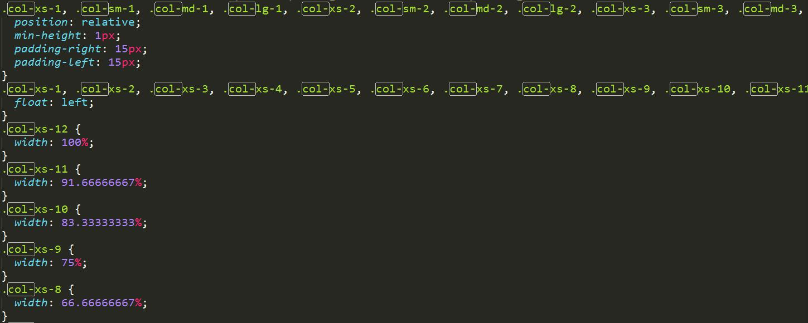
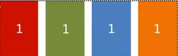
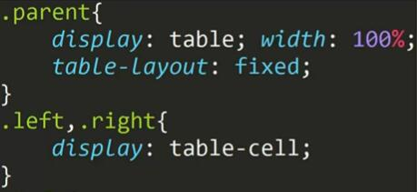

等分布局一个典型的例子就是bootstrap的栅格系统，它使用浮动整体布局，结合box-sizing:border-box这一CSS属性，并使用百分比限制每个col的尺寸。请允许我截个图。
栅格布局提供了等分布局的基本思路，然而，bootstrap，默认使用了左右各15px的padding，有的时候我们并不需要这一值。比如说我们想实现只有列与列之间有间隙（如下图所示），那该如何实现？
要是先上图所示效果，浮动做整体布局依然是必须的，每个列要设定box-sizing:border-box,对于上图所示的四列情况，需要设定每一列width:25%（这也是这种布局方式的一个缺点，如果要改需求比如说再加上一列，就要重新写宽度的百分比），列与列的间隙用padding-left实现，这样就基本实现了，除了第一列左侧有我们不想要的间隙。这里当然可以用nth-child或nth-of-type之类的解决问题，这里介绍另外一种方案是给父元素设定一个负的margin-left，其绝对值的大小为间隙的宽度，这样使用父元素的margin-left抵消掉第一个子元素的padding-left
使用table-layout:fixed结合table布局也可以实现等分布局，然而我并不喜欢这种方式。flex作为什么都能干的布局方式，必然也可以，这里就不再多说了。
等高布局最通用的实现方案是使用table布局（注意是table布局而不是table标签），因为table布局同一行的table-cell就是等高的，不需要再设定什么了。不怎么兼容的方案是使用flex。
